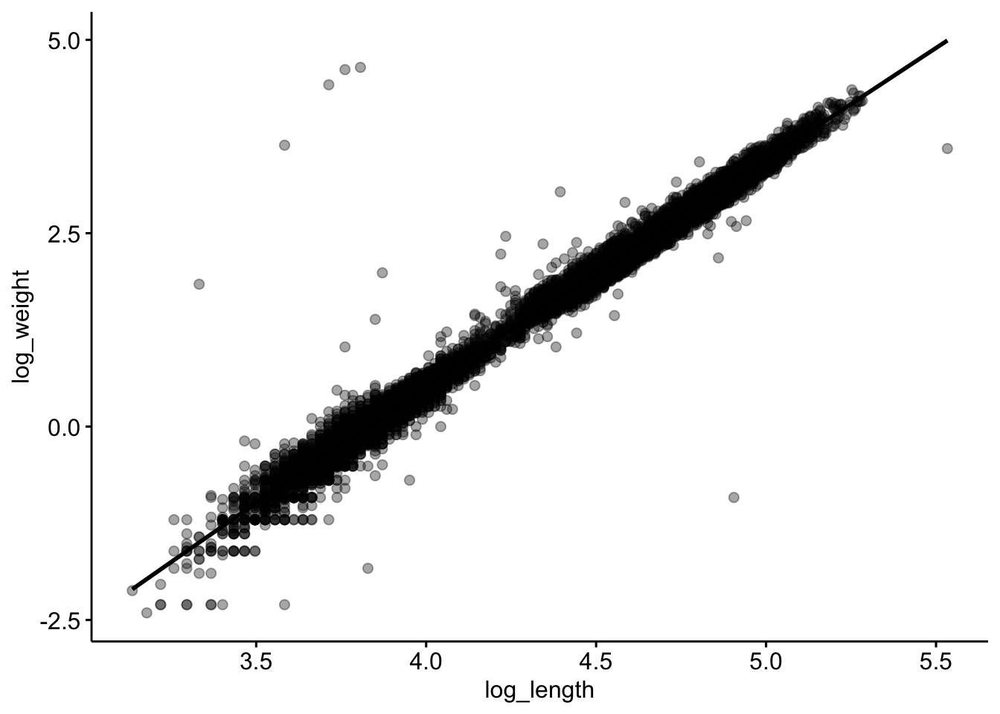

remotes::install_github("lter/lterdatasampler", force =TRUE)
Using GitHub PAT from the git credential store.
Downloading GitHub repo lter/lterdatasampler@HEAD
── R CMD build ─────────────────────────────────────────────────────────────────
* checking for file ‘/private/var/folders/8k/341jdnmx30s_knqs88nwj0vr0000gn/T/Rtmpxz4KIs/remotese5be66f918e8/lter-lterdatasampler-ff78476/DESCRIPTION’ ... OK
* preparing ‘lterdatasampler’:
* checking DESCRIPTION meta-information ... OK
* checking for LF line-endings in source and make files and shell scripts
* checking for empty or unneeded directories
Removed empty directory ‘lterdatasampler/vignettes’
* building ‘lterdatasampler_0.1.1.tar.gz’
── Conflicts ────────────────────────────────────────── tidyverse_conflicts() ──
✖ dplyr::filter() masks stats::filter()
✖ dplyr::lag() masks stats::lag()
ℹ Use the conflicted package (<http://conflicted.r-lib.org/>) to force all conflicts to become errors
Loading required package: carData
Attaching package: 'car'
The following object is masked from 'package:dplyr':
recode
The following object is masked from 'package:purrr':
some
We reject the null hypothesis because the p-value is significantly lower than 0.05. This indicates a significant relationship between forest type (section) and channel unit type (unittype) for Coastal salamander abundance.
2. Test the hypothesis that there is a significant difference in species biomass between clear cut and old growth forest types for the Coastal Giant salamander. (10 pts.)
Welch Two Sample t-test
data: weight_g by section
t = 4.9255, df = 6335.9, p-value = 8.629e-07
alternative hypothesis: true difference in means between group CC and group OG is not equal to 0
95 percent confidence interval:
0.8978633 2.0850725
sample estimates:
mean in group CC mean in group OG
9.810634 8.319166
The Welch Two Sample t-test showed a significant difference in the biomass of Coastal Giant Salamanders between Clear Cut and Old Growth forest types (t=4.93, df=6335.9, p <0.001). The mean biomass was higher in Clear Cut forests (mean=9.81g) compared to Old Growth forests (mean=8.32g). The 95% confidence interval for the difference in means ranges from 0.90g-2.09g, indicating that the difference is statistically significant.
3. Test the correlation between body length (snout to fork length) and body mass for Cutthroat trout. (Hint: run ?and_vertebrates to find which length variable represents snout to fork length) (10 pts.)
trout_clean <- and_vertebrates |>filter(species =="Cutthroat trout") |>drop_na(length_1_mm, weight_g)library(ggpubr)ggarrange(gghistogram(trout_clean$length_1_mm, title ="Length (snout-to-fork)"),gghistogram(trout_clean$weight_g, title ="Weight"),ncol =2)
Warning: Using `bins = 30` by default. Pick better value with the argument
`bins`.
Warning: Using `bins = 30` by default. Pick better value with the argument
`bins`.
s <- trout_clean |>slice_sample(n =5000)shapiro.test(s$length_1_mm)
Shapiro-Wilk normality test
data: s$length_1_mm
W = 0.94337, p-value < 2.2e-16
shapiro.test(s$weight_g)
Shapiro-Wilk normality test
data: s$weight_g
W = 0.79683, p-value < 2.2e-16
Warning in cor.test.default(trout_clean$length_1_mm, trout_clean$weight_g, :
Cannot compute exact p-value with ties
Spearman's rank correlation rho
data: trout_clean$length_1_mm and trout_clean$weight_g
S = 2669679446, p-value < 2.2e-16
alternative hypothesis: true rho is not equal to 0
sample estimates:
rho
0.9919772
Warning in cor.test.default(trout_clean$log_length, trout_clean$log_weight, :
Cannot compute exact p-value with ties
Spearman's rank correlation rho
data: trout_clean$log_length and trout_clean$log_weight
S = 2669679446, p-value < 2.2e-16
alternative hypothesis: true rho is not equal to 0
sample estimates:
rho
0.9919772
library(ggplot2)trout_clean |>ggscatter(x ='log_length', y ='log_weight', alpha =0.35, add ="loess")

A Spearman’s rank correlation showed a strong positive correlation between log-transformed body length and log-transformed body weight in the Cutthroat trough (rho=0.992, p<0.001), which indicates that as the body length increases, body weight also increases.
The downloaded binary packages are in
/var/folders/8k/341jdnmx30s_knqs88nwj0vr0000gn/T//Rtmpxz4KIs/downloaded_packages
install.packages("lterdatasampler")
The downloaded binary packages are in
/var/folders/8k/341jdnmx30s_knqs88nwj0vr0000gn/T//Rtmpxz4KIs/downloaded_packages
library(lterdatasampler)library(dplyr)
After completing the ANOVA test (and post-hoc Tukey’s HSD) above to test for significant differences in crab size among 3 different sites: 1) Create a boxplot showing the carapace width for each site where sites are ordered by latitude and 2) report the findings of the statistical test as you would in a scientific paper. Include both the code to create the boxplot and an image of the figure. (10 pts.)
Levene's Test for Homogeneity of Variance (center = median)
Df F value Pr(>F)
group 2 0.548 0.5802
83
pie_anova <-aov(size ~ site, data = pie_sites)summary(pie_anova)
Df Sum Sq Mean Sq F value Pr(>F)
site 2 521.5 260.75 60.02 <2e-16 ***
Residuals 83 360.6 4.34
---
Signif. codes: 0 '***' 0.001 '**' 0.01 '*' 0.05 '.' 0.1 ' ' 1
TukeyHSD(pie_anova)
Tukey multiple comparisons of means
95% family-wise confidence level
Fit: aov(formula = size ~ site, data = pie_sites)
$site
diff lwr upr p adj
DB-GTM 3.200786 1.893722 4.507850 3.0e-07
PIE-GTM 6.100714 4.771306 7.430123 0.0e+00
PIE-DB 2.899929 1.592865 4.206992 2.9e-06
ggplot(pie_sites, aes(x = site, y = size, fill = site)) +geom_boxplot() +geom_jitter(width =0.2, size =1, alpha =0.5) +labs(title ="Carapace Width by Site", x ="Site", y ="Carapace Width (mm)") +theme_minimal()
For Levene’s test, the p-value was 0.5802, indicating no significant variance difference between sites. For the ANOVA test, there is a significant difference in carapace width among sites (p>0.001). In Tukey’s HSD test, significant differences were found between all site pairs: DB vs GTM 3.2 mm different (p>0.001), PIE vs GTM: 6.1 mm difference (p < 0.001), and PIE vs. DB: 2.9 mm difference (p < 0.001).
Conduct a simple linear regression for the effect of water_temp_sd (a measure reflecting annual variation in water temperature) on carapace width. Report your findings (include code and a sentence reporting the results) AND create a plot with a line of best fit. Include both the code to create the plot and an image of the figure. (10 pts).
water_temp_lm <-lm(size ~ water_temp_sd, data = pie_crab)summary(water_temp_lm)
Call:
lm(formula = size ~ water_temp_sd, data = pie_crab)
Residuals:
Min 1Q Median 3Q Max
-7.9428 -2.6948 -0.2145 2.6573 8.8070
Coefficients:
Estimate Std. Error t value Pr(>|t|)
(Intercept) 13.93728 1.15338 12.084 <2e-16 ***
water_temp_sd 0.09938 0.15716 0.632 0.528
---
Signif. codes: 0 '***' 0.001 '**' 0.01 '*' 0.05 '.' 0.1 ' ' 1
Residual standard error: 3.506 on 390 degrees of freedom
Multiple R-squared: 0.001024, Adjusted R-squared: -0.001537
F-statistic: 0.3999 on 1 and 390 DF, p-value: 0.5275
ggplot(pie_crab, aes(x = water_temp_sd, y = size)) +geom_point() +geom_smooth(method ="lm", color ="blue", se =FALSE) +labs(title ="Effect of Annual Temperature Variation on Carapace Width", x ="Annual Variation in Water Temperature (°C)", y ="Carapace Width (mm)") +theme_minimal()
`geom_smooth()` using formula = 'y ~ x'
The linear regression shows that annual variation in water temperatures (water_temp_sd) does not significantly affect carparace width (size) (p=0.528).
Conduct a multiple linear regression for the effects of latitude, air_temp_sd, and water_temp_sd on carapace width. First check for correlations among the three predictor variables (and report the correlation table) and second report your findings from the multiple linear regression (code and a sentence reporting the results). (10 pts.)
latitude air_temp_sd water_temp_sd
latitude 1.00000000 0.7932130 0.04188273
air_temp_sd 0.79321301 1.0000000 0.40970338
water_temp_sd 0.04188273 0.4097034 1.00000000
pie_mlr <-lm(size ~ latitude + air_temp_sd + water_temp_sd, data = pie_crab)summary(pie_mlr)
Call:
lm(formula = size ~ latitude + air_temp_sd + water_temp_sd, data = pie_crab)
Residuals:
Min 1Q Median 3Q Max
-7.7515 -1.8897 0.0506 1.9301 6.6746
Coefficients:
Estimate Std. Error t value Pr(>|t|)
(Intercept) -3.96880 1.54818 -2.564 0.0107 *
latitude 0.55940 0.06413 8.723 <2e-16 ***
air_temp_sd -0.41713 0.30559 -1.365 0.1730
water_temp_sd 0.15927 0.16174 0.985 0.3254
---
Signif. codes: 0 '***' 0.001 '**' 0.01 '*' 0.05 '.' 0.1 ' ' 1
Residual standard error: 2.832 on 388 degrees of freedom
Multiple R-squared: 0.3516, Adjusted R-squared: 0.3466
F-statistic: 70.13 on 3 and 388 DF, p-value: < 2.2e-16
There is a positive correlation between latitude and air_temp_sd (r=0.79), suggesting that those predictors may be related. The correlation between latitude and water_temp_sd is very low (r=0.04), as is the correlation between air_temp_sd and water_temp_sd (r=0.41)